Welcome to Postman's Cosmic Courses: Part 2!
You're likely exploring this course if you're already familiar with Postman, but would like to get more out of it.
Select the right arrow on the bottom right of this slide to briefly review navigation tips for this presentation before we jump into content.
Please note that this presentation and its content is meant to provide brief overviews on the included topics. If you desire more information or detail, then please reach out to your Postman account team or participate in discussions at community.postman.com.
Navigation Tips

Use the left and right arrows on the bottom right of each slide to switch between different learning paths/stories.
Use the up and down arows on the bottom right of each slide to switch between different sections within a single learning path/story.
Keyboard arrow keys work just as well. The Esc key can be used to access a visual map of all the content available in this presentation.
Now, let's explore some stories that might drive your needs from this course.
Select a story to begin a learning path:
Building APIs in Postman - a single source of truth
As an API platform, Postman offers you the ability to create, version, define, develop, generate server code, test, deploy, observe, manage/share, and analyze your APIs all in one place!
Every aspect of API development, from designing a schema to building out test suites and generating live documentation, can be completed start-to-finish without leaving the Postman app. Maintaining an increased level of quality and productivity has never been so easy!
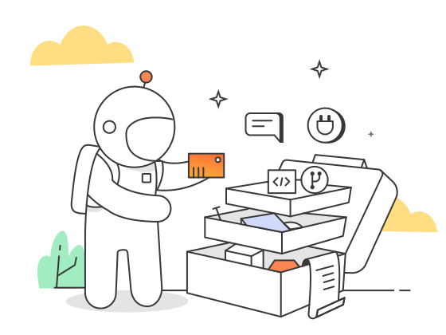Select the arrow on the bottom right of this slide to continue to the topics covered in this learning path.
- API-First Philosophy
- Collections and the API Builder
- Spec Phase (writing and importing specifications, generating server code)
- Develop Phase (mock servers, documentation)
- Test Phase
- Deploy Phase (CI/CD, monitors, reports)
- Knowledge Check
Click here to go back and select a different learning path.
API-First Philosophy
Being API-First means building out a high-quality API before writing application code. Our Fundamentals presentation includes more in-depth information about API-First development and the API lifecycle here. With the help of Postman, your workflow can look something like this:
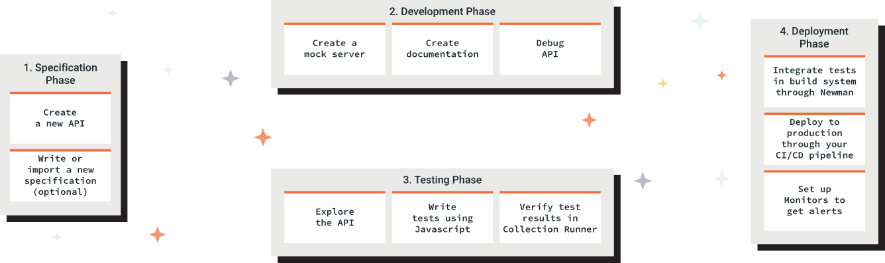How do collections relate to the API Builder?
Workflows can be organized around collections which stand in as a proxy for the API, but the API is the organizing principle for the requests, test suites, mocks, examples, monitors, and collections that relate to it. In other words, Postman collections are executable API descriptions.
For the aforementioned reasons, it would be reasonable to start with the API Builder in your producer workflow.

Let's break that down. Within the API Builder, you can define, document, test, deploy, and monitor an API. You can also generate your collection directly from the API Builder.
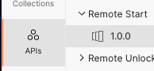 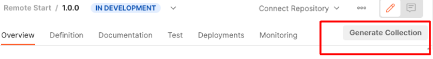It's also possible to develop an API specification modeled after a collection. In other words, it's possible to work in reverse to generate an API within Postman.
Note that this isn't a formal process or feature in Postman yet, but this collection, shared by Matt Ball, can help you walk through this reversed scenario. This process originated from Kevin Swiber's tool, which you can use in your browser here.
Specification Phase
If you'd like to see the API Builder in action, spend about 15 minutes with Arlemi in The Exploratory.
In this video, Arlemi explains how to create a new API and write/import a new specification.
Specification Phase Cont'd - Generating Server Code
You can download a running server based on your API specification and use it as a starting point for development of your business logic.
In her blog post, Joyce shares that "Organizations like BigCommerce and Intuit use Postman code generation for developer onboarding. This allows external developers as well as new team members to get up to speed more quickly."
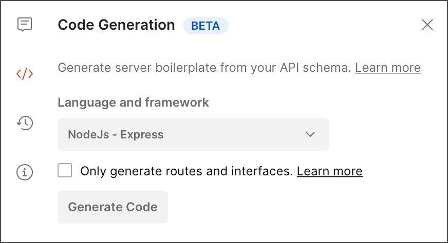Develop Phase - Mock Servers
By adding a mock server to your collection and adding examples to your requests, you can simulate the behavior of a real API.
Using a mock server is also a best practice for testing APIs in a faster, more efficient way, which we will dive into more deeply in the next learning path.
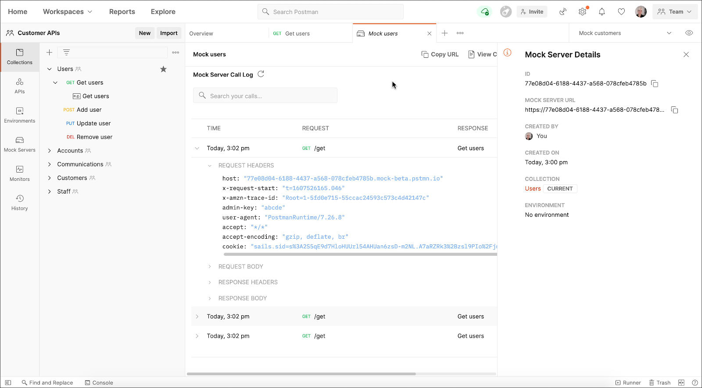Develop Phase - Documentation
Postman automatically generates basic, private documentation for any collection you create. It includes details for each request in the collection, along with sample code in various client languages. Request details include the method, authorization type, URL, headers, request and response structures, and examples. The documentation also displays all key-value pairs for request parameters, headers, and bodies.
Got 5 minutes? Watch Joyce walk through Postman's API documenation in this video.
To learn more about documenting your API, check out our learning page here.
Develop Phase Cont'd - Documentation (Publishing)
To publish documentation, it must be part of a collection. You can publish documentation for any collections that you created or have permission to edit.
Find more information about publishing documentation here.
Note that publishing documentation for an API is one of many ways to increase adoption of that API , which we cover in a separate learning path within this presentation.
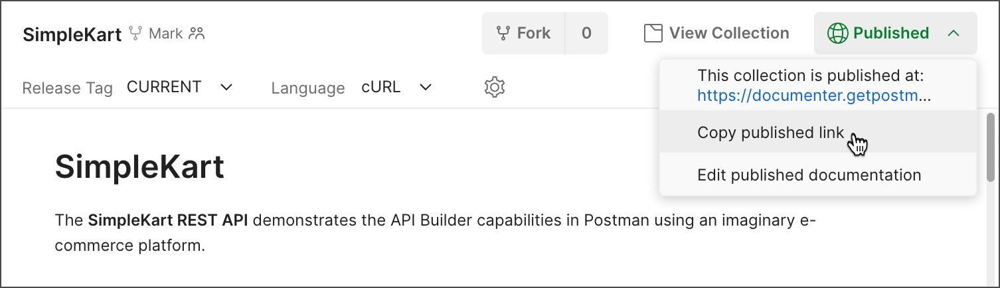Test Phase - Writing and verifying tests
You can create collections to use as test suites, integration tests, or contract tests for your API. These collections can be linked to a specific version of your API. To find more information about testing an API, please read our documention or jog your memory about Postman tests, in general, by reviewing this learning path from our Fundamentals presentation.
We'll cover how to test APIs faster and more efficiently in this upcoming learning path.

Deployment Phase - CI/CD Pipeline
In the API Builder, under the Test tab of any API version, you'll find an option to integrate with an existing CI/CD Pipeline, as documented here. After you set up the integration, you can view the status of builds or kick off a new build, all from within Postman. With the help of Newman and the Postman API, you also have the option to run API tests created in Postman as part of your CI pipeline.
In the API Builder, under the Test tab of any API version, you'll find an option to deploy to an existing API Gateway in AWS, as documented here.
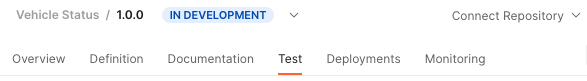Deployment Phase Cont'd - Monitors
With Postman, you can monitor an API in several ways. Below, you'll see what a Monitor looks like in the Montiors tab found on the far left of the Postman app.
We'll cover how to use Monitors for faster testing in this upcoming learning path.

Postman Monitors can also be integrated into slack workspaces as documented here. You can find more in-depth information about integrations in an upcoming learning path within this presentation.

Deployment Phase Cont'd - Reports
The Postman Enterprise Plan offers a Reports feature to producers and consumers of APIs who are using the platform and want to check on the overall performance of workspaces and teams within an organization. You can find this feature on the top left of your Enterprise home page.

Knowledge Check!
What can the API Builder allow users to do?
When you feel you can answer the question above, challenge yourself with this collection from our 30 Days of Postman challenge for developers, which runs through using a specification to build an API.
Click here to go back to the top of this learning path.
Building more efficient tests in Postman
Tests allow you to ensure that your API is working as expected, to establish that integrations between services are functioning reliably, and to verify that new developments haven't broken any existing functionality. With improved testing, you can rest assured you're producing high-quality APIs.
.png)
Select the arrow on the bottom right of this slide to continue to the topics covered in this learning path.
- Postman's API Testing Capabilities
- Collection Runner
- Monitors
- Webhooks
- Newman for Testing
- Knowledge Check
Click here to go back and select a different learning path.
Postman's API testing Capabilities
As you might have guessed from exploring the other learning paths in this presentation, Postman supports the development of APIs through their entire lifecycle journies. There's no doubting, however, that many new Postman users arrive at the platform wanting to test APIs. Our previous Fundamentals course goes over the very basics of API testing in Postman. To build on those basics, check out how Valentin Despa uses GitHub's API to create repositories and issues through Postman in this 12-minute video. As Valentin does this, he shows off advanced testing skills like, using dynamic variables, inspecting error messages, and leveraging test scripts.
Using the Collection Runner for Testing
If you're familiar with chaining requests in Postman, then you know you can leverage the "order of operations" we talk about in our Fundamentals Debugging and Testing learning path to write pre-request and test scripts that run before and after an HTTP request (respectively). What if we told you that each request in this chain of requests within a collection could be set off, or run, with just one click? Well, this is exactly what we're talking about when we refer to the Collection Runner!

Monitors for Testing
Postman Monitors can be collection-based. They can also be set up to monitor entire APIs (multiple collections). Monitors give you continuous visibility into the health and performance of your APIs. Once the monitor is running you’ll get alerted to any failures, so you can quickly identify and address issues before your API’s consumers are affected. Spend 5 minutes with Joyce to see how she sets up a monitor in the Postman cloud here. In her video, Joyce also shares the benefits of having an automated monitor set up with notifications.
Webhooks for Testing
Newman for Testing
Knowledge Check!
...
When you feel you can answer the question above, ...
Click here to go back to the top of this learning path.
Increasing API adoption through Postman
There are several benefits to increasing adoption of your API and one of the most powerful ways to do that is by creating a public workspace. Increasing adoption of your API can enable broader collaboration and help gather product feedback, as Joyce discusses in this blog post (4-minute read).
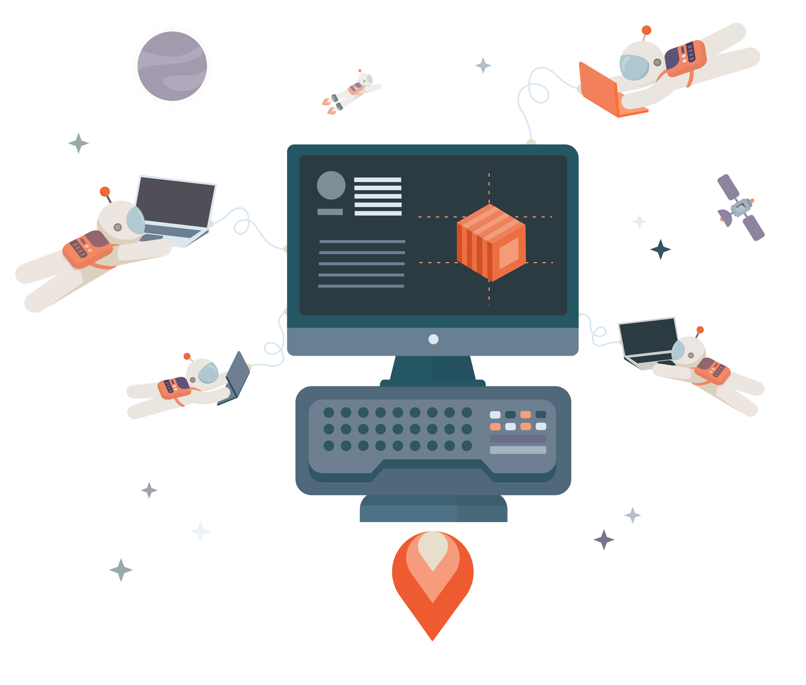Select the arrow on the bottom right of this slide to continue to the topics covered in this learning path.
- ...
- Knowledge Check
Click here to go back and select a different learning path.
...
Knowledge Check!
...
When you feel you can answer the question above, ...
Click here to go back to the top of this learning path.
Integrations with Postman
Integrations allow you to automate functionalities between Postman and other tools you might use in your workflow. Your existing software development pipeline tools can still be an asset to your team.
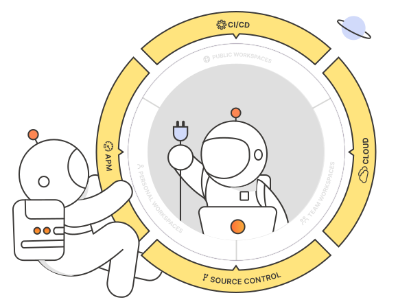Select the arrow on the bottom right of this slide to continue to the topics covered in this learning path.
- What can be achieved with Integrations
- Accessing Integrations
- Custom Webhooks
- CI Integrations
- Other Available Integrations
- Knowledge Check
Click here to go back and select a different learning path.
Why provide Integrations?
In this ~35-minute video, Shashank Awasthi, one of our very own product managers, shares that Postman provides a rich set of first-party integrations that allow you to extend use cases beyond Postman.
What can be accomplished with integrations?
- Backup and sync your collections and schemas to your version control.
- Send monitor run data to application performance monitoring (APM) tools to analyze the performance and reliability of APIs.
- Send monitor run alerts to incident reporting softwares to keep a check on API availability.
- Intercept/ proxy data from the web into Postman for further analysis.
- Author, import, and export your APIs in various API standards such as OpenAPI, WADL, RAML, etc.
How to access the integrations in your workspace
Our learning center documentation walks through the details of how to locate integrations in a given workspace. "Integrations" are made easily accessible via your workspace home page.
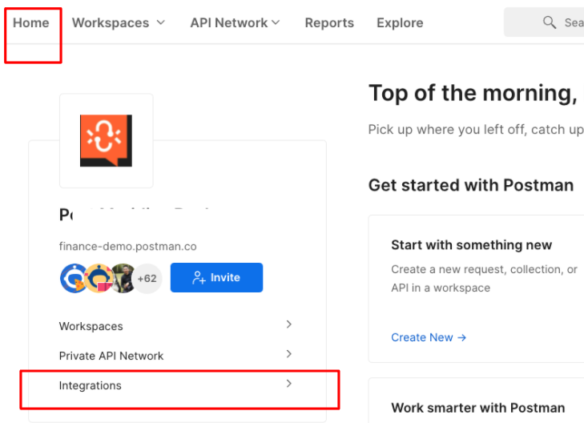From "Integrations", you can then select "Browse All Integrations" and add integrations there. Each integration's page explains how to use the integration and what it could do. If available, you can select View or View All to view previously configured integrations for the selected integration.
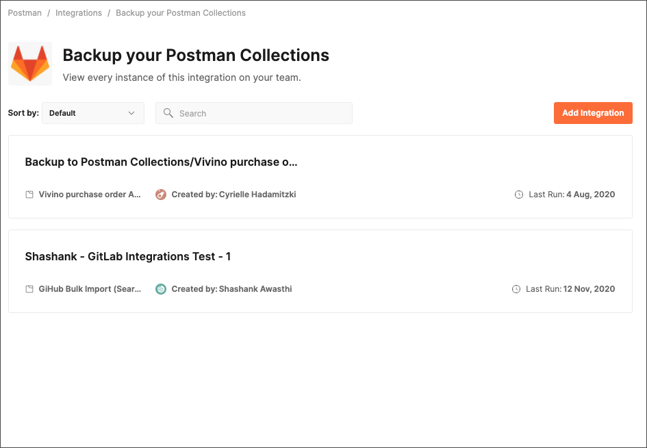It's also possible to add integrations throughout your workflow, beyond the home page of your workspace.
For example, within your workspace, you'll find options like the following Sync API integration found when defining API versions in Postman.
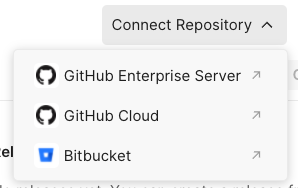Custom Webhooks
Continuous Integration
What other integrations are available to explore?
Knowledge Check!
...
When you feel you can answer the question above, ...
Click here to go back to the top of this learning path.
You did it!
If you've progressed through each of the learning paths, congratulations! You've explored...
- Building APIs in Postman
- Building more efficient tests in Postman
- Increasing API adoption through Postman
- Integrations with Postman